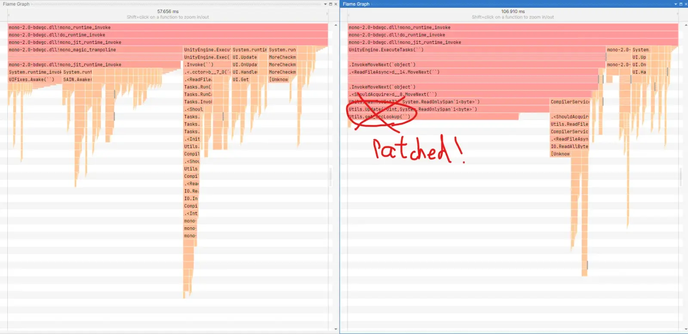

LoadBundleFaster (Crc32 Patch)
- Downloads
- 13,414
- Favourites
- 26
- Mod lists
- 122
Description
LoadBundleFaster: Hardware Accelerated Bundle Loader
LoadBundleFaster is a performance plugin that replaces SPT’s slow, software-based CRC32 checksum calculation with a high-performance native implementation using Intel’s PCLMULQDQ hardware instructions.
Performance Demo
Load time comparison: Native Patch vs. Stock SPT (Remote Connection)
(Video: Left = Patched, Right = Unpatched. Observe the significant reduction in “Loading data” time.)
Scope of Optimization (Read Before Installing)
This mod is a specialized tool designed to solve a specific bottleneck. To manage expectations, please note:
- What it SPEEDS UP: The “Bundle Loading” screen during the initial Client Startup screen. It optimizes the process where the client verifies Mod Bundles before reaching the main menu.
- What it DOES NOT affect: This mod does not improve your raid loading times, nor does it increase your in-game FPS.
Who is this for? (Important!)
This mod is specifically designed for: Remote / Headless Server Users.
Due to how SPT handles file verification, you only need this mod if your Client connects to the Server using ANY IP address OTHER THAN 127.0.0.1 or localhost.
Why? The Technical Reason
- Localhost (Single PC / 127.0.0.1): When you play on the same PC as the server (127.0.0.1), SPT skips CRC32 verification entirely to protect your local files. This mod will have no effect because the slow function is never called.
- Remote/Network Connection (Any IP other than 127.0.0.1): When connecting to a separate server PC, SPT must verify the integrity of cached bundles. It calculates a CRC32 checksum for every single file. The legacy Mono runtime does this very slowly, causing long load times. This mod fixes that bottleneck.
Hardware Requirements
- CPU: Must support SSE4.1 and PCLMULQDQ instructions.
- In human terms: Unless your CPU was stolen from a museum, you are fine.
- The Litmus Test: If your PC can even launch Escape From Tarkov (let alone play it), your CPU is already way too powerful for this project. If you are capable of getting “Head, Eyes,” you are capable of running this plugin.
- (Basically, any Intel CPU after 2010 or AMD CPU after 2011 works perfectly.)
Installation
- Download the s8_SPT_PatchCRC32-v1.0.0-win-x86_64.7z ` from the Releases Tab.
- Extract the contents into your SPT root directory (where
BepInExis located). - The plugin (
com.s8.spt_patchcrc32.dll) and the native library (libcrc32_pclmulqdq.dll) will be placed automatically.
Technical Details (For the curious)
The Bottleneck
Escape From Tarkov runs on a version of Unity using an older Mono runtime. This runtime’s JIT compiler lacks “Automatic Vectorization” (Auto-SIMD). As a result, standard C# CRC32 calculations are processed byte-by-byte (scalar), which is incredibly slow for large data bundles.
The Evidence (FlameGraph):

- Right (Stock): The large red block shows
Utils.Crc32.HashToUInt32consuming a massive amount of CPU time during the update loop. - Left (Patched): The bottleneck is gone. The calculation is instant.
The Solution: Native Bypass
We utilize Native DLL Interop to bypass the Mono JIT entirely.
- Interop: The mod intercepts the
HashToUInt32call. - Hardware Acceleration: It passes the data to a custom C DLL (
libcrc32_pclmulqdq.dll). - PCLMULQDQ: We use the Carry-less Multiplication instruction set (adopted from zlib-ng/Intel). This allows the CPU to “fold” and process large chunks of data in parallel directly on the hardware, rather than in software loops.
Result: A verified 1000x+ speed increase in raw calculation throughput compared to the SPT C# reference implementation. Proof
Source Code: GitHub Repository Credits: SPT Team, zlib-ng project, Intel Corporation.
Version
1.0.0
- Initial release